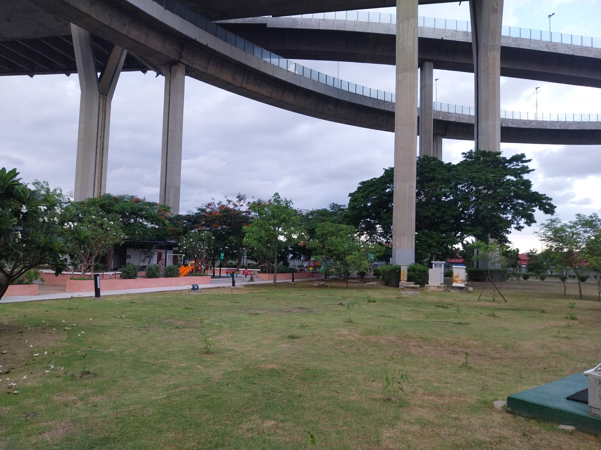

สวนสุขภาพลัดโพธิ์
ตั้งอยู่ริมถนนเพชรหึงษ์ ตำบลทรงคะนอง เป็นพื้นที่สำหรับการพักผ่อนหย่อนใจ ออกกำลังกาย นั่งรับลม และชมวิวริมคลองลัดโพธิ์ในสวนสีเขียว ใต้สะพานภูมิพล
รูปภาพสถานที่

ที่ตั้ง
ถนนเพชรหึงษ์ ตำบลทรงคนอง อำเภอพระประแดง จังหวัดสมุทรปราการ 10130 ประเทศไทย
เวลาเปิด-ปิด : เปิดทุกวัน 05:00 น. – 21:00 น.